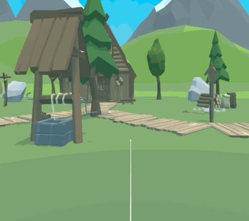
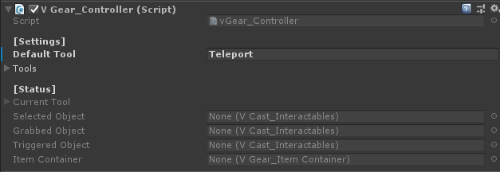
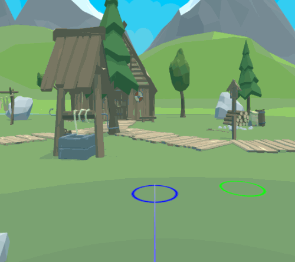
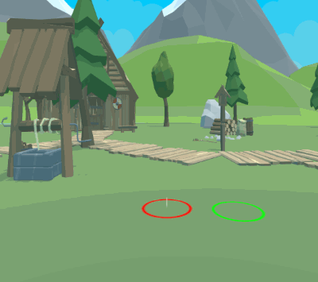
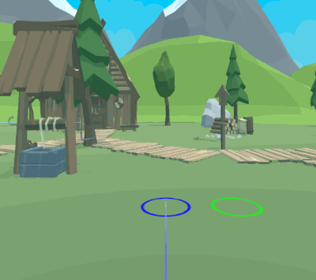
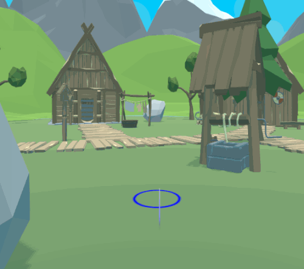
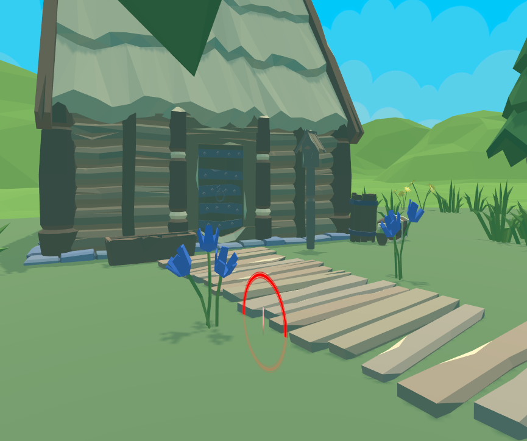
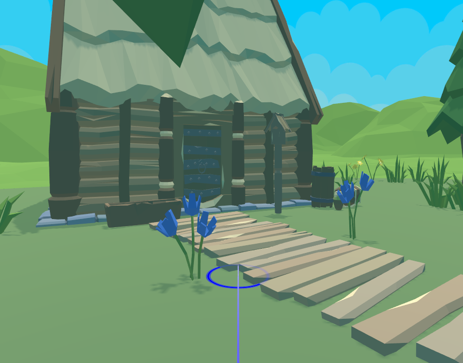
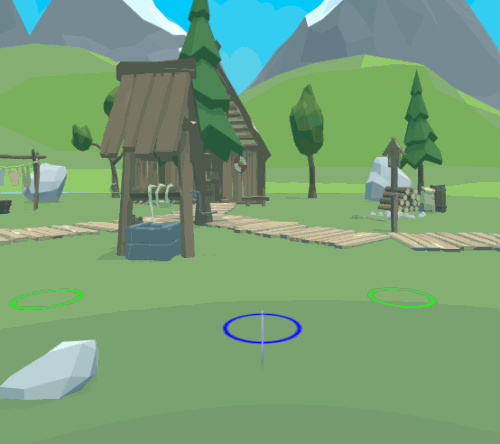
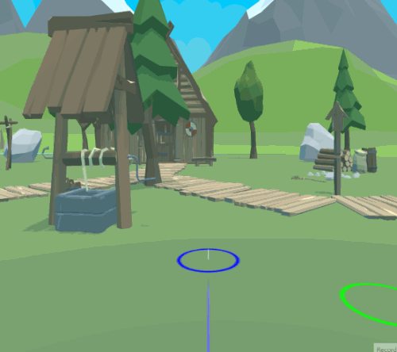

Locomotion
In this article
Objective
This chapter introduces the Locomotion provided by VotanicXR.
Locomotion is how to move the user through the virtual world, but simply move the user may lead to discomfort by vection.
This chapter introduces some locotmotion features to move the user in comfort way provided by VotanicXR, include using Commands and using Teleport tool.
Built-in Locomotion Option in VotanicXR
The built-in locomotion option provided by VotanicXR mainly are Movement from Input and Teleportation.
Movement from Input is the locomotion that the user transform will be moved when the user input the movement commands.
As the movement is inputed from user, they mind will be accept the movement easily and lead less discomfort.
Teleportation is the locomotion that the user transform will be instantly teleported or teleported with transportation when the user indicate a destination to teleport.
As the destination is indicated, user will be ready to the teleportation and lead less discomfort.
Set up Locomotion Sample Scene
Go to Assets > Votanic > VotanicXR_Tutorial > Tutorial04 and open the scene Locomotion provided.
GameObject TutorialController with script component Tutorial03Controller is provided for the tutorial below.
Movement from Input
Using Movement Commands
As mentioned at previous chapter, VotanicXR SDK have provided mapped buttons and commands.
The commands with locomotion are Move, Rotate, Shift, Float, Turn and JumpSink, detail of the movement commands will be introduced in paragraph below.
The commands are bound with the controller button by configurator, when user press the corresponding button, the user transform will be translated with respect to the command.
Movement Modes
Movemenent mode can be set by the SDK manager vGear through API or In-Game Menu, to switch the movement mode for the user. The movement modes are Traveler Mode and Soul Mode.
Traveler Mode and Soul Mode
Traveler Mode is a boolean to enable the navigation of the user transform.
When Traveler Mode is enabled, user may navigate themself using movement commands.
When Traveler Mode is disabled, user can not navigate themself through movement commands, but user are still able to move around themself without navigate the user transform based on the system they using, such as HMD and CAVE.
Soul Mode is a boolean to enable for ignoring free falling and object collisions of user.
When Soul Mode is enabled, user will ignoring free falling and collision with colliders and vice versa.
Note that two movement modes are independent. When both of them are enabled, user can navigate themself and ignore free falling and collision, and user are still able to interact to objects, example application is god mode to look around the environment.
When both of them are disabled, user can not navigate themself and will be collided with environment, example application is dodge game.
When only Traveler Mode is enabled, user can navigate themself and will be collided with environment, example application is dodge game.
Movement in Traveler Mode
There are six movement commands predefined in VotanicXR, they are Move, Rotate, Shift, Float, Turn and JumpSink.
The movement commands can be sent with a Value mentioned before, the Value is a float value.
With using the Command Input System, the command can be sent with Value.
Move is command to move the user transform forward and backward with the value received.
The positive value received will move the user transform forward and backward for negative input with acceleration.
The user transform will be moved with the product of the input value and the maximum move speed that can be set by the API.

Rotate is command to rotate the user transform with the value received.
The positive value received will rotate the user transform right and left for negative input with acceleration.
The user transform will be moved with the product of the input value and the maximum rotate speed that can be set by the API.
Shift is command to strafe the user transform side to side.
The positive value received will strafe the user transform right and left for negative input with acceleration.
The user transform will be moved with the product of the input value and the maximum move speed.
Float is command to lift the user transform.
The positive value received will lift the user transform up and down for negative input without acceleration.
Lift down is only avaliable if the user transform is not at the ground, and it will lifts the user transform through the ground only when the soul mode is enabled.
The user transform will be moved with the product of the input value and the maximum move speed.

Turn is command to turn the user transform in 90 degree.
The positive value received will rotate the user transform right and left for negative input with acceleration.
The user transform will be turned once for each Turn command is received, and the command will not be accumulated.
JumpSink is commnad to jump and sink the user transform.
The positive value received will jump the user transform up and negative value received will sink the user transform to the ground below.
The user transform will be jump or sink once for each JumpSink command is received, and the command will not be accumulated.
Teleport Tool
Teleport is a popular navigation tool in VR application. The teleport tool usually marks a destination locomotion, and the user will be transported to the location when the teleportation is triggered.
The location requires a Ground, which is a gameObject with collider and the layer is detectable by the teleport tool.
Using Default Teleport Tool
Set Teleport as Default Tool
Go to
vGear > Frame > Controller > Teleport, componentV Gear_Teleport (Script)is shown at the inspector window, which manage the setting of the Teleport tool.And go to
vGear > Frame > Controllerto set the default tool intoTeleportfor testing.
Enter play mode, the default tool is changed into teleport.
By pressing the Trigger button of the controller, or send the
Teleportcommand through Input System, the user will be teleported into the projection point.// Press Space to Teleport if (vGear.Input.KeyboardPress(KeyCode.LeftShift)) vGear.Cmd.Send("Teleport");
Configure Teleport Tool
The Teleport Tool can be configured in the inspector and API.
To configure, go to the component V Gear_Teleport (Script) of vGear > Frame > Controller > Teleport.
The [Setting] and [Advanced] settings can be set for the need of VotanicXR SDK user, such as color and velocity of the projectile line.
Further setting will be introduced below as advance teleportation.
Advance Teleport
By using the feature and settings of Teleport Tool, advanced teleportation can be implemented.
Teleport Area
The available location of teleport is determined by the Detect layer saved at vGear > Frame > Controller > [Settings], it also stores the controller related setting, will be further introduced in In-Game Tool.
By using the layer of the floor gameObject, Teleport Area can be implemented.
There are several methods to implement the teleport area feature. The sample with simple way is shown below.
Create a empty gameObject named
Teleport area, and create two 3d objectPlaneas child of it. Name the childsEnable AreaandDisable Arearespectively.Resize and relocate the planes, the
Enable Areais sightly higher than theDisable Areaand theDisable Areais sightly higher than the ground.Set the layer of
Enable Areato layer 30:vLayerFloor, that accepted by the teleport tool.
Teleport using Waypoints
Waypoint can be used to symbolize position for user to teleport. By using waypoints, we can make sure the user will teleport to the desire position.
Right click vGear > GameObjects > Waypoint and drag the prefab into desire position.

Developer may toggle the Teleport Waypoint setting in the V Gear_Teleport (Script) component or through API, it offers the advance options to use waypoint, the options are Detect, Ignore and Waypoint Only.
Detect will detect waypoint, Ignore will ignore waypoint, and WaypointOnly only detect waypoint for teleportation.
| Teleport Waypoint: WaypointOnly | Teleport Waypoint: Ignore |
|  |  |
Waypoints can be customized with different settings, including face angle and offset, to force the user facing at desire angle and position.
Developer can enable the Apply Rotation with custom value of face angle and offset in V Gear_Waypoint (Script) component of the waypoint prefab.

Teleport using Collision Mode
The Collision Mode setting in the V Gear_Teleport (Script) component switches the detection of colliders.
Developer may toggle the collision mode at run time through API for the desire effects.
| Collision Mode enable | Collision Mode disable |
|  |  |
Transformation
This paragraph introduces an API function can be used with teleport tool to perform nice locomotion.
Customize Setting for Teleport Tool
Teleport tool is one of the method to transite the user transform.
Other Transition includes Turn.
The transition detail can be set in the [Setting] > Transition of component V Gear_User (Script) in the vGear > Frame > User.
Transition method options are Translation and Fade, with the parameters to adjust the detail of transition, such as the time or acceleration of the Translation method, or the fade in color of the Fade method.

Move Along using Transformation
Developer may transite the user transform using API function, the user will be transform to the parameter passed. The sample to use the API function is shown below, when the user click the space key, the user transform will be transite into the next transform of the target list.
public GameObject targetList;
private List<Transform> targets = new List<Transform>();
private int currentTargetIndex = 0;
private void Start()
{
// Load the Target List into the list
foreach( Transform t in targetList.transform)
{
targets.Add(t);
}
}
void Update()
{
if (vGear.Input.KeyboardUp(KeyCode.Space))
{
// Transform user transform to the target
vGear.user.Transform(targets[currentTargetIndex]);
if (currentTargetIndex + 1 == targets.Count )
{
currentTargetIndex = 0;
}
else
{
currentTargetIndex++;
}
}
}
